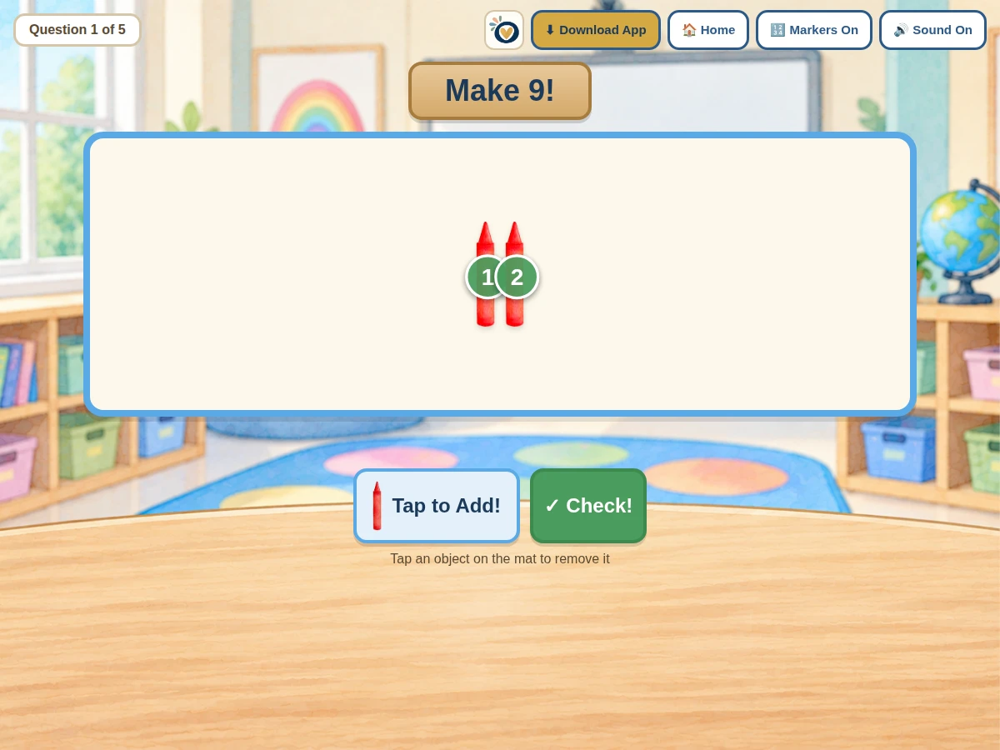

Little Play
Make a Number
Tap to add objects and make the target number!
$2.99
After purchase, sign in to My Games with your checkout email to download the game for offline play.
Ways to use it
- Build a target number by adding objects to the mat.
- Take objects away again by tapping them, then check the total.
How to play
- Choose the highest number and how many questions in Teacher Setup.
- Tap to Add until the mat shows the target number.
- Tap Check to see if it matches.
Practical details
Teacher Setup sets the highest number to count to (5, 10, or 20), the number of questions, and whether counting markers show. Sound and markers can be toggled during play.
Explore together
Invite children to explain what they notice and talk through their choices.